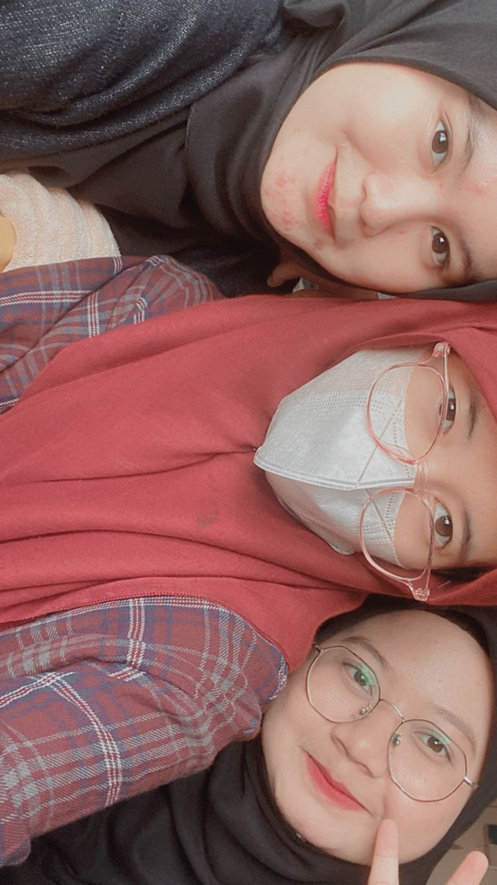

|  |
The person in the center is Nur Syazana Izzati Binti Mat Roze,
while the person on the right is Nazwa Shafina Binti Shaidi.
We became acquainted while pursuing our diploma studies,
and despite being relatively new friends, we have a long-standing familiarity with one another.
Our personalities complement each other well, making us compatible friends. Additionally, they have been incredibly supportive in my academic pursuits, for which I am immensely thankful.
|